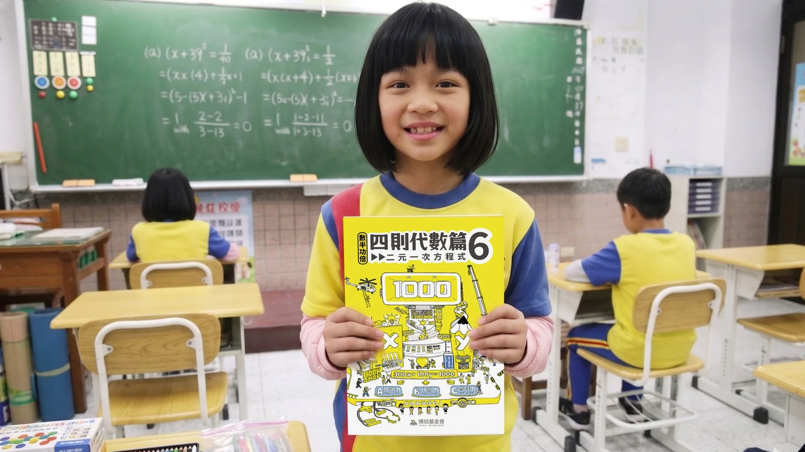
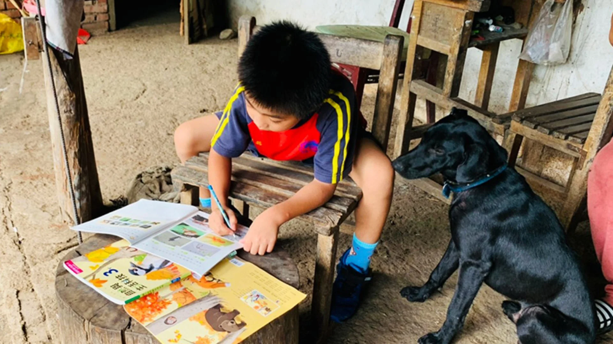
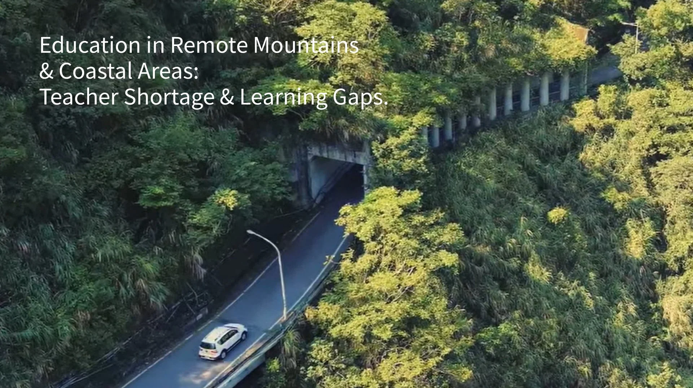
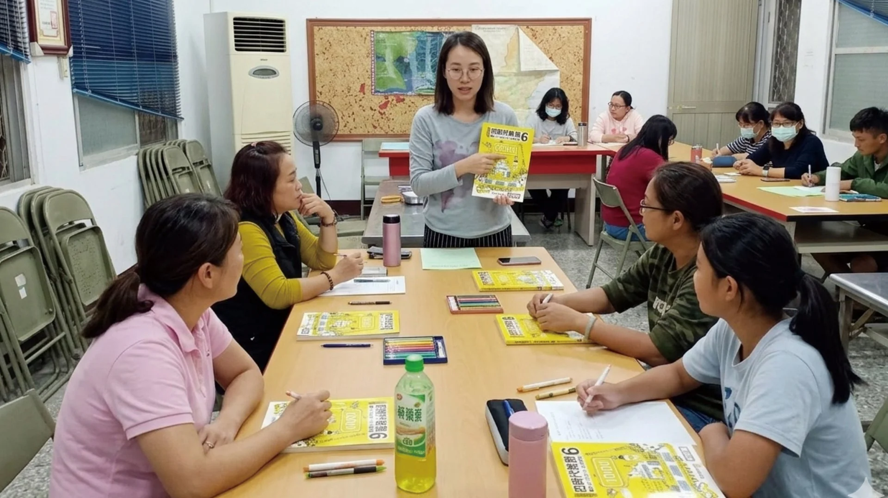
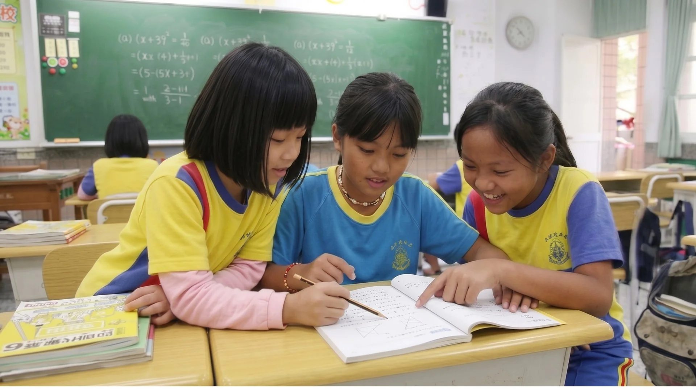

"Knowledge brings change: Bringing hope home by ending hereditary poverty."



Teacher shortage is a barrier to the future.
In Taiwan's remote mountain and coastal regions, geographic isolation leads to severe learning gaps from an early age.
Without tailored materials, struggling students lose their dignity and the power to choose their own future path.
We don't just donate books; we design an entire community-based educational infrastructure.

Embedding professional pedagogy directly into materials to empower local tutors.
Transforming math into "Life Blueprints" to replace anxiety with confidence.
Creating 631 professional local jobs to ensure long-term community resilience.
Proven scalability through systemic design.
3,653
Students Serviced
480h
Hours per Student
631
Professional Jobs
9,898
Training Hours
Design is the bridge. By making logic tangible, we restore the joy of learning and the dignity of mastery.
Let knowledge bring hope home.
